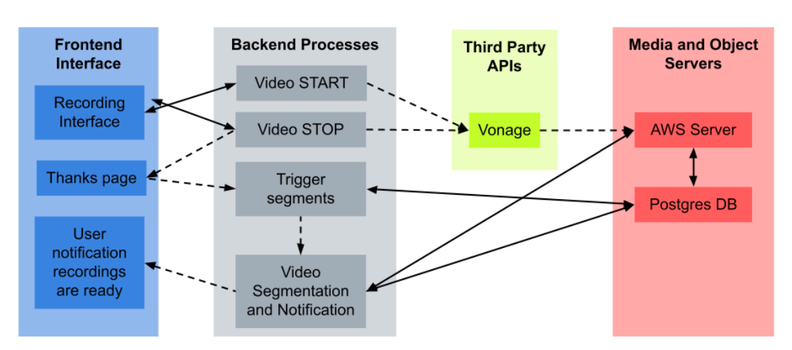
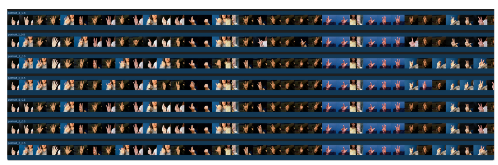
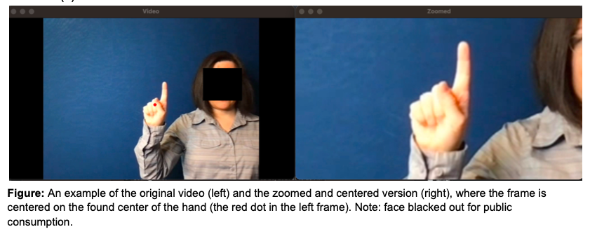
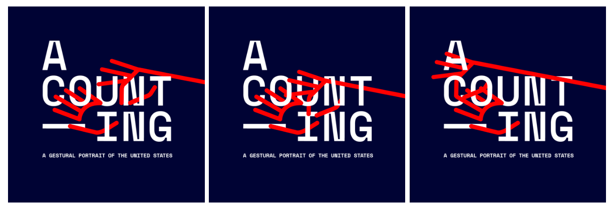

My MS thesis work had 3 main focuses:
1) An online participatory, generative video portrait of counting 1-100 in sign language
2) A written document considering the ramifications of participatory art, computer vision, and disability aesthetics,
3) A creative coding guest unit at Gallaudet University's Advanced Digital Media Course, by inivitation from Max Kazemzadeh, PhD. Course website is here.
I developed software that allowed users to record themselves signing 1-100. Antoher piece of software then spliced these into indivdiual videos, which were proofed by participants before being strung together into a final video portrait. In order to string the videos together, computer vision scripts were developed to align, resize, and color balance the hands to make the video as coheisve as possible, while showing the diversity and beauty of sign language.
This was a video version of what was a participatory portrait that was previously only accessible to vocal languages.
High level architecture of the system and sample video outputs:
  Visual branding for the project, courtesy of Sizin Chen, Sheena Stuart-Milburn, and Ekene Ijeoma. This is based off the vocal edition's logo, but a one by one framing of the sign for "count" in ASL.
